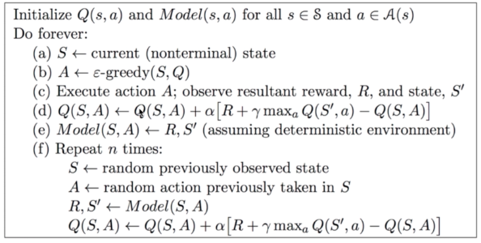
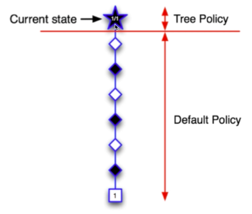
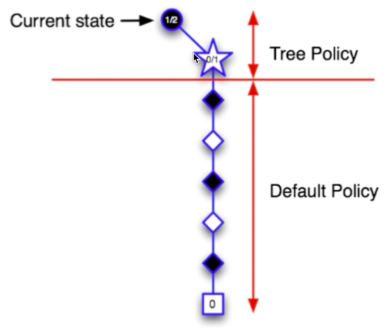
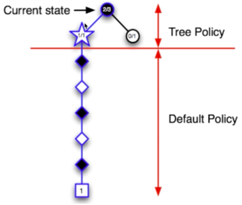
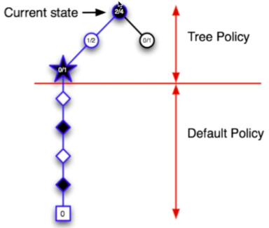
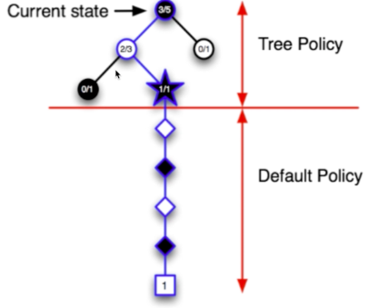
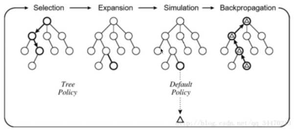

前言
- 强化学习可以分为有模型和无模型的方法两大类
- 未知模型
- 学习法
- 通过智能体的交互，学习值函数和策略
- 代表方法：MC，TD
- 已知模型
- 规划法
- 无需智能体交互，直接从模型学习最优策略
- 代表方法：DP
基于模型的强化学习
核心思路
- 通过经验，学习出一个虚拟的环境模型
- 利用学到的环境模型，进行动态规划，计算价值函数或者策略
优势
- 可以通过监督学习，有效地学习环境模型
- 可以将学到的环境模型放在GPU内，快速得到大量的交互信息
- 没有任何真实损失
- 直接利用环境模型的不确定性
劣势
- 先学环境模型，再学值函数，存在两次近似误差 -> 累计误差
Dyna-q
- 算法流程

- repeat \(n\) times的部分实际上是在用学习到的虚拟环境模型进行学习，这一部分可以新开一个线程，和外面真实的环境交互分开。
- 真实的环境交互1秒一次，而计算机中虚拟的环境交互0.1秒一次，那这里的\(n\)就是10。
蒙特卡洛树搜索Monte-Carlo Tree Search
-
特性
- 适用于Combinatorial Games
- Combinatorial Games特点：零和、完美信息、确定性、离散、序列化
-
算法核心
- 在MCTS中，仿真策略需要策略提升
- 每次仿真有两个阶段
- 树策略(提升)：选择动作，最大化\(Q(S, A)\)
- 默认策略(固定)：快速计算到终止状态
- Repeat(每次仿真)
- 使用MC评价来估计\(Q(S, A)\)
- 提升树策略，比如epsilon-贪婪，UCB等
- 对仿真出来的经验做MC优化
- 搜索到最优的搜索树\(Q(S,A)\to q^{*}(S,A)\)
epsilon-贪婪对于非最优策略是均匀采样的 UCB既考虑了值函数，又考虑了探索的次数 = 回报值/仿真次数
-
优势
- Highly selective best-first search
- 动态评价状态
- 结合了采样去打破维度诅咒，用采样取代了暴力搜索
- 适合于各种黑盒模型，不需要满足马尔可夫性
- 计算有效，容易并行
-
算法流程

- 当前状态\(S1\)为叶子节点，直接从当前状态开始，用默认策略进行仿真
- 结果“赢了”
- 更新节点的UCB=获胜次数/仿真次数

- 依据UCB规则选择一个动作向下走，每一个动作都对应了一个UCB
- UCB其实是一个值，与值函数正相关，与仿真次数负相关
- 但是目前仿真次数都是0，所以根据值函数选一个动作，到达\(S2\)
- 结果“输了”
- 更新树策略路径上的每个节点的UCB

- 从S1开始，根据UCB选一个动作
- 由于第二步中，最终结果是“输了”，所以第二步中动作的UCB下降了，于是从\(S1\)重新选一个动作，到达\(S3\)
- 结果“赢了”
- 更新树策略路径上的每个节点的UCB

- 再从\(S1\)开始搜索，搜到\(S3\)后，再选一个动作，到达\(S4\)
- 结果“输了”
- 更新树策略路径上的每个节点的UCB

- 再从\(S1\)开始搜索，搜到\(S3\)后，没有去\(S4\)(因为\(S4\)刚刚输了，UCB下降)，再选一个动作，到达\(S5\)
- 结果“赢了”
- 更新树策略路径上的每个节点的UCB
-
后面的步骤依次类推

TD搜索
-
算法特性
- 有些情况下，没有终止状态，MC方法不适用
- 将MCTS中的MC评价换成TD评价
-
算法流程
- 从当前状态St开始采样片段
- 估计\(Q(s, a)\)
- 对于每一步的仿真，使用Sarsa方法更新Q函数
- $$\Delta Q(S,A)=\alpha (R+\gamma Q({S}',{A}')-Q(S,A))$$
- 基于\(Q(s, a)\)选择动作